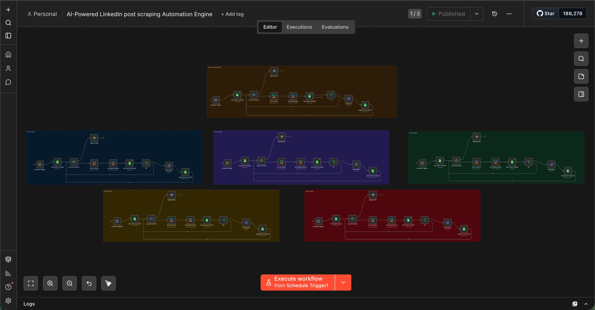
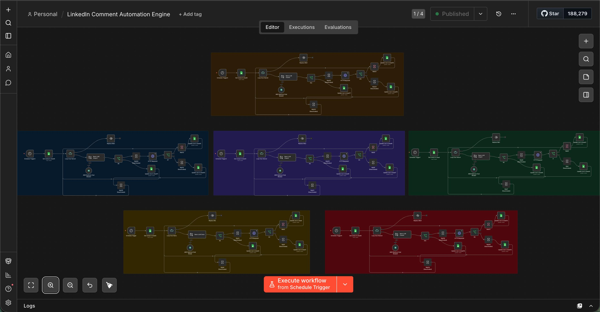
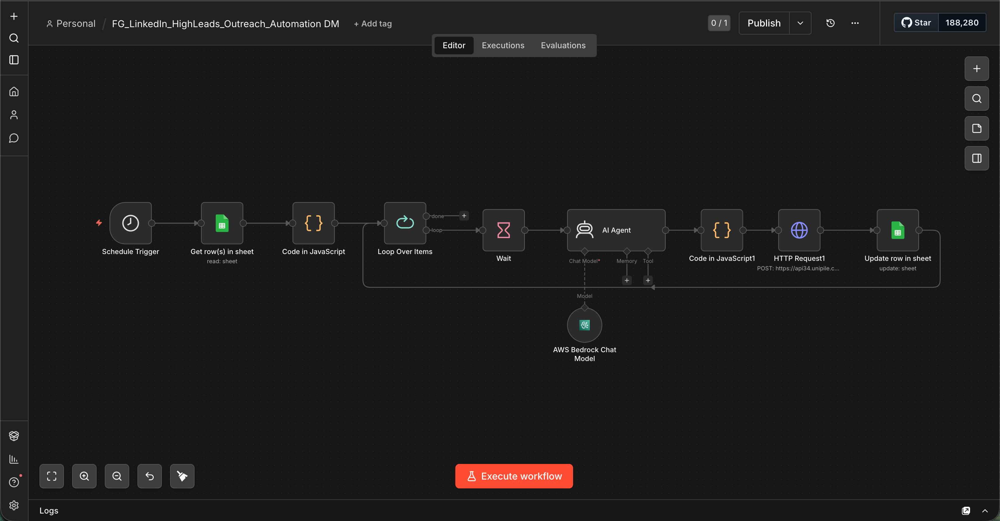

CS / 001
AI-Powered LinkedIn Lead Engagement Engine
The brief
FortyGuard needed to scale founder-led outreach without burning out the team — or getting flagged by LinkedIn. The system had to act human, sound human, and stay safe while engaging hundreds of targeted prospects every day.
What I built
- Five parallel scraping engines that monitor target lists and pull fresh LinkedIn posts on schedule across 400+ profiles
- An AI comment generator using AWS Bedrock with tone-matching prompts to produce comments that read as written, not generated — publishing 2,000+ comments per week
- Randomized scheduling and behavioral delays to mimic natural human activity and avoid platform flags
- Reply-detection workflows that trigger contextual follow-ups and route hot leads into a DM outreach agent
- Centralized Google Sheets dashboard for monitoring engagement, replies, and conversion in real time
● Production / 01

● Production / 02

● Production / 03

2k+
AI comments published per week
400+
Profiles orchestrated in parallel
5x
Daily scheduled executions
24/7
Autonomous operation